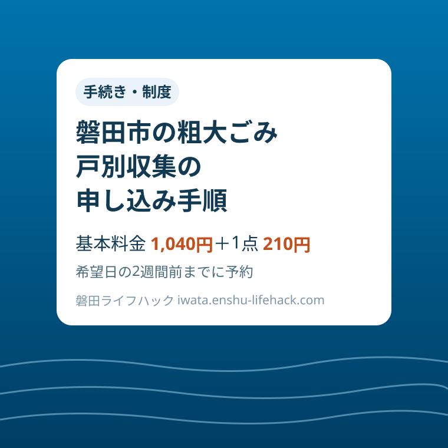

手続き・制度
磐田市の粗大ごみ戸別収集の申し込み手順｜希望日の2週間前までにLINEか電話で予約

この記事の要点
Q. 磐田市の粗大ごみ戸別収集は、どう申し込むの？
A. 事前予約制で、原則として希望日の2週間前までに、磐田市公式LINEからの電子申請か電話（ごみ資源循環課0538-37-4812）で申し込みます。料金は基本料金1,040円＋1点210円で、当日は家の外に出して本人か家族が立ち会います。
導入——タンス1棹を、集積所まで運べない
実家の和室に残ったタンスを処分したい。でも集積所に出せる大きさではなく、自宅の車には載らない。磐田市でこういう場面に使うのが、粗大ごみの戸別収集です。市が有料で家まで回収に来てくれる仕組みですが、申し込めば翌日に来る、という制度ではありません。
この記事は、戸別収集そのものの「申し込み手順」に絞った案内です。施設への持ち込みとの料金比較は以前の記事で扱ったので、ここでは申し込む前に何を用意し、どの窓口に、いつまでに連絡し、当日どう迎えるかを順番に整理します。
根拠にするのは、磐田市公式ページ「粗大ごみの戸別収集」（ページ番号1001449、2026年10月9日更新）です。あわせて「粗大ごみ戸別収集のLINE申請」（ページ番号1013066）と「民間許可業者による有料ごみの戸別収集」（ページ番号1012074、2026年9月8日更新）も確認しました。
先に結論を書きます。申し込みは事前予約制で、原則として希望日の2週間前までに行います。窓口は、磐田市公式LINEアカウントからの電子申請か、電話のどちらかです。予約状況によっては、収集が3週間から1か月程度先になることもあると市は案内しています。
料金は基本料金1,040円に、品物代として収集物1個につき210円を加えた額です。支払いは現金またはPayPayで、現金はおつりのないように事前に用意するよう求められています。金額そのものより、「2週間前」という締切の感覚を先に持てるかどうかが、この制度を使いこなす分かれ目です。
まず、公式資料から事実を整理する
市の説明では、戸別収集は「集積所に出せない大きなごみを運搬する手段のない家庭」に、有料で家まで回収に行く制度です。運搬手段のある方は、なるべく自己搬入してくださいとも書かれています。誰でも使える便利な回収便ではなく、運べない家庭のための受け皿だという位置づけです。
収集できるものは、一番長い部分が2m以内で、重さが80kg以下のもののうち、市で回収できるものです。例として挙がっているのは、たんす、ふとん、学習机、ベッド、マットレス、オルガン、ソファなどです。申し込む前に、品目の名前だけでなく、長さと重さの見当をつけておく必要があります。
逆に、規定の長さや重さを超えるもの、事業活動で出たごみ、ガスボンベ、消火器、農業用機械機具、タイヤなどの処理の困難なものは収集できません。こうしたものは購入店などに相談するよう案内されています。申し込みの電話口で初めて「それは出せません」と分かるのは時間の無駄なので、対象かどうか怪しい品目は、最初に候補から分けておきます。
集積所に出すことのできるごみは、戸別収集ではなく集積所に出してください、とも明記されています。袋に入る大きさのものまで戸別収集に混ぜると、品物代が1点210円ずつ積み上がります。申し込み前の仕分けが、そのまま料金の節約になります。
利用は原則として1世帯につき月1回までです。そして、引っ越しや解体などによる大量のごみは収集できません。「家一軒分をまとめて」という使い方はできないので、大量に出る場面は後述する民間許可業者の枠組みと分けて考えます。
収集日は月曜日から金曜日までで、祝日と年末年始は除きます。土日に回収は来ません。在宅しやすい土曜日に合わせようとしても制度上できないので、平日に本人か家族が立ち会える日を、希望日の候補として用意しておきます。
申し込み方法は2つです。電子申請は磐田市公式LINEアカウントから行い、詳しい操作は市の「粗大ごみ戸別収集のLINE申請」のページで案内されています。電話で申し込む場合は、担当のごみ資源循環課（電話0538-37-4812）へ問い合わせます。市のページでは、電話申込はページ下部の情報発信元の番号へ、とされています。
当日の決まりも、申し込みと同じくらい重要です。回収には本人または家族の立会いが必要で、立会いがない場合は回収されません。ごみは事前に家の外に出しておき、集合住宅では1階まで出します。収集員が家の中に入って運び出す作業はできない、と明記されています。
そして、当日に収集物を追加することはできません。申し込んだ品目と個数が、そのまま当日の回収対象です。「ついでにこれも」は通用しないので、申し込みの時点で出すものを確定させる必要があります。ここが、申し込み前のメモづくりが効いてくる理由です。

家電リサイクル法の対象品、つまりテレビ、エアコン、冷蔵庫・冷凍庫、洗濯機・衣類乾燥機などを出す場合は、家電リサイクル券が別途必要です。リサイクル券は製品に貼らずに、収集員へ直接渡すよう案内されています。貼ってしまうと当日の受け渡しで手間取るので、券は封筒などに入れて手元で保管しておきます。
料金の組み立て方——基本料金に1点210円を足していく
料金の計算は単純です。家電リサイクル品を含まない場合、基本料金1,040円に、品物代として収集物1個につき210円を加えます。市が示す例では、収集物4品なら1,040円に210円×4個を足して1,880円です。タンス、机、ふとん、マットレスの4点なら、その額で見通しが立ちます。
家電リサイクル品を含む場合は、ここに運搬料が加わります。基本料金1,040円と品物代（全収集物1個につき210円）に加えて、家電リサイクル品の運搬料が1個につき1,100円、そして家電リサイクル券が品目ごとに必要です。市の例では、家電リサイクル対象品2点と対象でない品1点で、1,040円＋（210円×3個）＋（1,100円×2個）＝3,870円と、リサイクル券2枚、とされています。
支払いは現金またはPayPayです。現金の場合は「おつりのないように事前にご用意ください」と案内されています。料金は申し込みの時点で品目と個数が決まれば計算できるので、収集日の前に、ちょうどの額を用意しておくのが確実です。
基本料金には免除の制度（減免制度）があります。対象は、身体障がい者手帳の1級から3級までの交付を受けている方のみの世帯と、70歳以上の方のみの世帯で、いずれも世帯分離は除きます。当てはまる方が民生委員の確認を得れば、基本料金1,040円が免除されます。
減免を受けるには、事前に、民生委員が署名または記名押印した減免申請書を用意しておく必要があります。当日に口頭で申し出ればよい仕組みではないので、対象になりそうな世帯は、申し込みより前に申請書の準備から始めてください。品物代210円の扱いまで含めて、申し込み時にごみ資源循環課へ確認しておくと安心です。

なお、まだ使えるものについては、市はリユースも案内しています。戸別収集で収集した粗大ごみの中には、利用者の了解を得たうえで、地域情報サイト「ジモティー」に出品され、希望者へ無料で譲渡されることがあるそうです。処分費用を払う前に譲る・売る選択肢も含めて考えると、出す点数自体を減らせる場合があります。
磐田の暮らしに置き換える——締切から逆算して予定を組む
申し込み手順でいちばん実務的なのは、希望日から逆算することです。原則2週間前までの申し込みに加えて、予約状況によっては3週間から1か月程度先の予約になることがある、と市は書いています。つまり「来週末に退去だから、その前に」という組み立ては、この制度では間に合わない可能性が高いのです。
月1回までという制限も、予定組みに影響します。今月はタンスと机、来月はベッドとマットレス、という分け方をすると、処分が2か月にまたがります。一度に全部出したい事情があるなら、市の戸別収集ではなく、後で述べる民間許可業者の有料戸別収集が現実的な受け皿になります。
立ち会いは、家族の予定とセットで考えます。本人か家族がいればよいので、本人が仕事の平日でも、家族が在宅できる日を選ぶ方法があります。逆に、家族全員が平日不在の家庭では、希望日の候補を出すこと自体が最初の関門になります。申し込みの前に、平日の在宅可能日を2〜3日拾っておくと、電話やLINEでのやり取りが一度で済みます。
集合住宅では、ごみを1階まで出しておく必要があります。エレベーターのない建物で大きな家具を下ろすのは、それ自体が一仕事です。収集員は家の中に入って運び出せないので、部屋から1階までの移動は利用者側の段取りとして、収集日当日の朝ではなく前日までの作業計画に入れておきます。
年末などは特に混み合うことが予想されます。市の案内にある「3週間から1か月程度先」という幅は、繁忙期を見越したものと読めます。大掃除で出た大型のものを年内に、と考えるなら、11月のうちに品目を確定させて申し込むのが安全な進め方です。
電話で申し込む場合の受付は、ごみ資源循環課の窓口時間に合わせるのが基本です。LINEの電子申請なら、窓口の時間を気にせず手続きを始められます。品目と個数が確定している人ほど、LINE申請の手軽さが効きます。一方、対象になるか判断がつかない品目がある人は、電話で確認しながら申し込む方が二度手間になりません。
評価——良い点と、注文したい点
良い点は、申し込みの締切と当日のルールが、市のページに具体的に書かれていることです。「原則として希望日の2週間前まで」「3週間から1か月程度先のご予約となることがあります」と幅まで示されているので、予定の組み直しが利きます。料金も基本料金と1点単価が明記され、計算例まで載っているため、申し込み前に総額の見通しが立ちます。
良い点はもう一つ、申し込み窓口がLINEと電話の2系統あることです。スマートフォンの操作に慣れた人はLINEで完結し、品目の相談をしたい人は電話で確認しながら進められます。減免制度についても、対象世帯と「民生委員の確認」という条件が同じページに書かれているので、申し込み前に準備を始められます。
注文したい点は、電話申込の案内が「ページ下部の情報発信元の番号にお問い合わせください」という書き方で、申込先の電話番号として本文中に大きく示されていないことです。申し込み手順のページなのですから、電話番号は手順の一部として本文に置いてほしいところです。この記事では、担当課であるごみ資源循環課の番号0538-37-4812を併記しました。
注文したい点はもう一つ、LINE申請で具体的に何を入力するのかは、別ページを見ないと分からないことです。品目、個数、大きさ、希望日など、申し込み時に求められる入力項目が手順ページの段階で一覧になっていると、申し込み前のメモづくりがそのまま入力の準備になります。
当日に追加できない、立ち会いがないと回収しない、という厳しめのルールは、裏返せば「申し込んだ内容どおりに確実に回収する」という運用の表れでもあります。ルールを知らずに当日困る人を減らすには、申し込み完了の画面や連絡の時点で、これらの注意がもう一度目に入る工夫があると助かります。
対案・結論——急ぐとき、運べるときは、別の枠組みへ
対案・結論として、戸別収集の申し込みは「出す日が決まったら、まず品目表を作って2週間以上前に申し込む」という一点に集約されます。品目、個数、おおよその長さと重さをメモにし、平日の立ち会い可能日を2〜3日用意してから、LINEか電話で申し込む。これが最短の手順です。
日程が合わない場合は、市のページも案内しているとおり、民間許可業者（有料）への問い合わせが対案になります。磐田市が許可した一般廃棄物収集運搬許可業者が、引っ越しや遺品整理で発生した多量のごみなどに対応する枠組みで、令和5年4月1日に始まりました。料金は取扱業者によって異なるため、直接事業者に確認します。市の戸別収集が対象外とする「引っ越しや解体による大量のごみ」は、こちらが受け皿です。
自分で運ぶ手段がある人は、市の案内のとおり自己搬入が基本です。持ち込み先と料金は施設ごとに異なるので、当サイトの既存の案内で確認してください。戸別収集は、運べない家庭のための月1回の枠として空けておく方が、制度の趣旨にも合います。
減免の対象になりそうな世帯は、順番を入れ替えます。まず民生委員への確認と減免申請書の準備を済ませてから、戸別収集を申し込む。申請書が当日に間に合わないと、基本料金の免除を受けられないまま収集日を迎えることになりかねません。
確認する順番
- 出す品目を確定させ、品目・個数・長さ（2m以内）・重さ（80kg以下）のメモを作る。集積所に出せるものは除く
- 平日の立ち会い可能日を2〜3日用意し、希望日の2週間前までに、磐田市公式LINEの電子申請か電話（ごみ資源循環課0538-37-4812）で申し込む
- 料金を計算して用意する（基本料金1,040円＋1点210円。家電リサイクル品は運搬料1点1,100円とリサイクル券が別途必要）。現金はおつりのないように
- 減免の対象世帯は、申し込み前に民生委員の確認を受けた減免申請書を用意する
- 収集日までに品目を家の外（集合住宅は1階）へ出し、当日は本人か家族が立ち会う。当日の追加はできない
家族で共有するための記録
申し込んだ内容は、家族で共有しておくことをおすすめします。品目と個数、収集日、料金の額、支払い方法を1枚のメモに残せば、申し込んだ本人以外の家族が立ち会う日でも、当日の受け渡しに迷いません。立会いは本人でなく家族でもよいからこそ、情報の共有が効きます。
家電リサイクル券を買った場合は、券そのものと、渡し方（製品に貼らず収集員へ直接渡す）もメモに書き添えます。券を製品に貼ってしまう、券の所在が分からなくなる、といった当日の小さな行き違いを防げます。
実家の片付けで使う場合は、処分する品目の一覧を、きょうだいなど関係者と事前に共有しておくことも大切です。月1回の枠で数か月にわたる処分になるなら、どの月に何を出すかという配分表まで作っておくと、家族間の行き違いが減ります。
大石の視点
大石の視点として、この制度の肝は「料金」よりも「日程」だと思います。基本料金1,040円と1点210円という金額は控えめですが、2週間前までの申し込みと、混雑時の3週間から1か月先という幅は、引っ越しや退去の日程とぶつかりやすい。処分の相談を受ける場面でも、退去日が決まってからでは間に合わないケースが少なくありません。
不動産の現場では、残置物の処分が売却や賃貸の開始を遅らせることがあります。戸別収集を使うなら、家の片付けを始める最初の週に品目表を作り、申し込みまで済ませてしまうこと。その後の掃除や手続きと並行して収集日を待つ進め方が、結果として一番早いと感じます。急ぐ事情があるときは、最初から民間許可業者へ相談する割り切りも必要です。
まとめ
磐田市の粗大ごみ戸別収集は、事前予約制で、原則として希望日の2週間前までに、公式LINEか電話で申し込む制度です。料金は基本料金1,040円に1点210円を加えた額で、支払いは現金かPayPay。当日は家の外に出して立ち会い、追加はできません。手順さえ先に押さえれば、難しい手続きではありません。申し込みの締切から逆算して動くことが、そのまま一番の近道です。
- 申し込みは事前予約制。原則、希望日の2週間前までに公式LINEの電子申請か電話（ごみ資源循環課0538-37-4812）で
- 料金は基本料金1,040円＋1点210円（4点で1,880円）。家電リサイクル品は運搬料1点1,100円とリサイクル券が別途必要。支払いは現金かPayPay
- 対象は長さ2m以内・重さ80kg以下。原則1世帯月1回まで、収集は平日のみ。当日は家の外に出して本人か家族が立ち会い、追加は不可
- 70歳以上の方のみの世帯などは、民生委員の確認で基本料金が免除。減免申請書を事前に用意する
参考にした公式情報
- 粗大ごみの戸別収集／磐田市（ページ番号1001449、2026年10月9日更新、2026年11月13日確認）
- 粗大ごみ戸別収集のLINE申請／磐田市（ページ番号1013066、2026年11月13日確認）
- 民間許可業者による有料ごみの戸別収集／磐田市（ページ番号1012074、2026年9月8日更新、2026年11月13日確認）
- 市で収集・処理できないごみ／磐田市（2026年11月13日確認）
最終確認日：2026-11-13 ／ 本記事は公表情報と執筆者の見解を分けて記載しています。制度・数値・公開状況は変更される場合があるため、最新情報は磐田市公式ページでご確認ください。